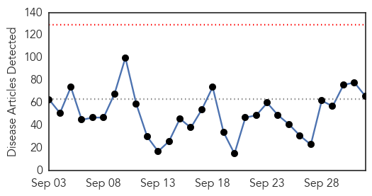
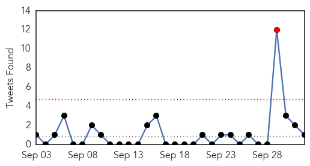

Dengue Fever
30-Day Web Trend
17 alerts, 5 warnings

30-Day Twitter Trend
3 alerts, 0 warnings

Article Locations

Article Confidences

Top Articles:
- 0.998
- Dengue patients in Vietnam overwhelm hospital for tropical diseases
- 0.990
- Dengue cases hit 9-yr high
- 0.988
- Dengue scare continues at Kotwa village - India
- 0.972
- Union Health Ministry takes stock of situation
- 0.970
- Dengue death is official only if patients die in select hospitals - India
- 0.964
- Dengue outbreak: Number of cases falling; barring rain, surge unlikely, say officials
- 0.957
- Dengue rings alarm bells in Rawalpindi
- 0.882
- Malaria scare hits International City in Dubai
- 0.841
- Chief secretary to supervise drive against dengue - Pakistan
- 0.827
- After the elder one, dengue takes life of 3-year-old brother
- 0.817
- Dengue breeding notices to Sanskriti, AIIMS
- 0.790
- Dengue crisis in Delhi: Notices to doctors
- 0.786
- Delhi government doctors get notices for dereliction of duty
- 0.774
- Government issues notice to doctors
- 0.650
- No proof that haze reduces dengue cases, Medical studies news, Health News, AsiaOne YourHealth
Top Tweets:
-
No tweets found for Oct 02, 2015
Unknown
30-Day Web Trend
0 alerts, 0 warnings

30-Day Twitter Trend
1 alerts, 0 warnings

Article Locations

Article Confidences

Top Articles:
- 0.996
- Deadly Legionnaires' Disease Outbreak Isn't Over Yet
- 0.996
- Schools Affected By Hand, Foot and Mouth Disease Being Sanitised
- 0.995
- Schools affected by hand, foot and mouth disease being sanitised
- 0.981
- Tuberculosis at Cayman Islands Hospital
- 0.978
- EYES OPEN, PLEASE....
- 0.972
- Meningococcal deaths in the Hunter
- 0.968
- 8 now dead from Legionnaires’ disease in western Illinois
- 0.966
- MINISTRY OF HEALTH MONITORS OUTBREAK IN THE REGION
- 0.965
- KBS World Radio
- 0.954
- Seneca Valley Virus cases increase
- 0.948
- Health District Offers Drive-In Flu Shots
- 0.948
- Legionnaires' Disease Outbreak in Bronx Kills 1, Sickens 12
- 0.929
- Rare Salmonella Strain Strikes Patients at Detroit's Henry Ford Hospital
- 0.917
- Chicago Tribune
- 0.905
- New Legionnaire's Disease outbreak in Bronx kills one
- 0.883
- Aspen Times Editorial: Keep fluoridating Snowmass water
- 0.869
- Society tool to tackle brain virus
- 0.867
- Hospitals are breeding grounds for drug-resistant superbugs and cause deadly infections that kill 75,000 U.S. patients annually
- 0.839
- Surveillance project to help prevent flu in Phoenix area
- 0.834
- Legionnaires’ Bacteria Discovered In Hauppauge H.S. Cooling Tower « CBS New York
- 0.806
- Rare Q Fever Outbreak Reported in American Medical Tourists
- 0.805
- Rare Q fever outbreak reported in American medical tourists
- 0.765
- Every 9 Minutes, Someone In The World Dies Of Rabies
- 0.760
- Officials probe salmonella cases at Detroit hospital
- 0.758
- Beware of El Nino
- 0.752
- It’s already time to get that annual flu
- 0.726
- Otero County Public Health office offers flu shot clinics
- 0.725
- Medicaid to Fund New HPV Vaccine - Story
- 0.718
- Scientists: Origin Of HIV/AIDS Pandemic ‘Was 1920s In Kinshasa’
- 0.714
- Cooling towers blamed for Legionnaires’ disease at prison
- 0.707
- Hollande casts doubt on fulfilling terms of Minsk deal
- 0.707
- Tunisia lifts state of emergency imposed after beach attack
- 0.707
- Syrian minister says air strikes alone won’t defeat Islamic State group
- 0.707
- France’s Hollande and Putin face off over Syria at Paris talks
- 0.707
- ‘My PhD in 180 seconds’: France’s nerdiest challenge
- 0.707
- Obama condemns ‘routine’ mass shootings in US
- 0.707
- Hürriyet journalist Hakan injured in 'organised assault'
- 0.707
- France to investigate Volkswagen for ‘aggravated fraud’
- 0.707
- Hollande, Putin meet amid rising tensions over Russian air strikes in Syria
- 0.707
- Taliban claims responsibility for US plane downed in Afghanistan
- 0.707
- Air France to slash jobs and flights after union talks fail
- 0.682
- Military base chemicals monitored
- 0.680
- Norovirus outbreak affects hundreds of Nevada kids, teachers
- 0.663
- Carter Center Press Releases, Including Carter Center News Releases Distributed to Media
- 0.660
- Equine virus kills upstate New York resident
- 0.652
- Welsh government begins investigation after mad cow disease identified in dead animal -- Earth Changes -- Sott.net
- 0.650
- Legionnaires’ Bacteria Regrew in Bronx Cooling Towers That Were Disinfected
- 0.645
- Malaria: 4,000 cases a week and the death of three children a day
- 0.645
- Mexico is the 3rd country to officially eliminate river blindness, Jimmy Carter offers congratulations
- 0.639
- Food Poisoning at NY Catered Wedding Reception Caused by S. Aureus
Showing top 50 articles...
Top Tweets:
- 0.536
- Children the Flu and the Flu Vaccine http://t.co/ayeeMHExgZ